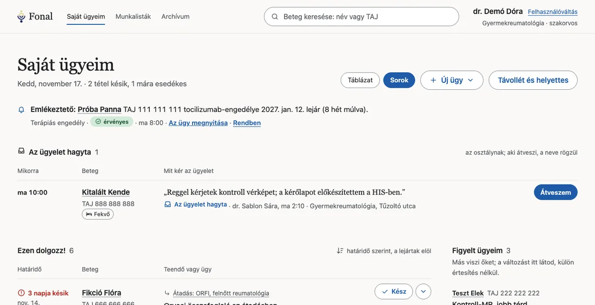
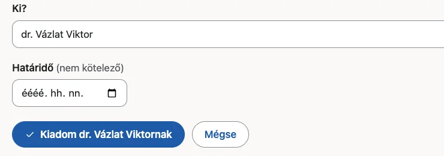
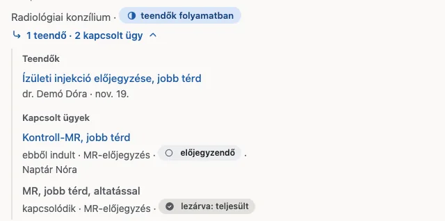

Súgó
Rövid válaszok a napi munka kérdéseire: mit látsz, miért, és mit tegyél.
Kezdd itt
Ezekkel érdemes kezdeni.
Találatok
Nincs találat erre: „”. Próbálj rövidebb vagy másik szót.
Más szerepkörnél vagy témában találat van.
A kezdőképernyő 9
Mit látok a kezdőképernyőmön?
Belépés után a saját munkád nyílik: orvosként a Saját ügyeim, nővérként és asszisztensként a Teendőim. Felülről lefelé haladva látod, mi sürgős, mi vár másra, és mit követsz.Hol: Belépés után; később a fejlécben: Saját ügyeim, illetve Teendőim
Felülről lefelé
- Emlékeztetők: például hogy egy engedély 8 hét múlva lejár.
- Az ügyelet hagyta: amit az éjszakai ügyelet a profilodnak hagyott. Csak akkor látszik, ha van ilyen.
- Ezen dolgozz!: amiért te felelsz, határidő szerint; a lejártak elöl, pirosan.
- Kire várunk?: a várakozó ügyeid, a várakozás hossza szerint.
- Jobbra (táblázatban a lista alatt) a Figyelt ügyeim (amit más visz, és te követed) és a Kiutalva az ügyeletnek (mi lett az ügyeletnek küldött kéréseiddel).
- Nővérként és asszisztensként alatta az áreáid munkalistája: Felelős nélkül, Ezen dolgozz!, Kire várunk?
- A cím alatt a nap, és hogy hány tétel késik. Jobbra az Új ügy és a Távollét és helyettes gomb.
- A Táblázat és a Sorok gombbal váltasz a két nézet között; a választásod listánként megmarad.
- Ügyeletesként az Ügyeleti lista, vezetőként az Összesítő nyílik; ha két szereped van, ott indulsz, ahol legutóbb dolgoztál.

Az orvos kezdőképernyője, kitalált adatokkal. Lásd még: Miért áll egy tétel az „Ezen dolgozz!” részben?Miért áll egy ügy a „Kire várunk?” részben?Hogyan kerül egy ügy a „Figyelt ügyeim” közé?Mit kezdjek „Az ügyelet hagyta” tétellel?Hol látom, mi lett az ügyeletnek kiutalt kérésemmel?Miért kaptam emlékeztetőt, és miért nem jön újra?
Miért áll egy tétel az „Ezen dolgozz!” részben?
Mert te vagy a felelőse, vagy helyettesíted a felelősét, és nem másra várunk: még nem kezdték el, nálunk a következő lépés, vagy lejárt egy engedély. A lejártak állnak elöl, piros jellel, utána a többi határidő szerint.Hol: Saját ügyeim, illetve Teendőim → Ezen dolgozz!
- Ügy és teendő is lehet. A teendő külön sorban áll: a címnél kis betűvel az ügye, alatta, hogy ki adta.
- A határidő a megadott határidő; ha nincs, az ügytípus saját dátuma, például az időablak vége vagy az engedély lejárata.
- A lejárt tétel elöl marad, amíg valaki el nem intézi, például: „3 napja késik”.
- Kikerül innen, ha lezárod, ha várakozó lépésbe teszed (akkor a Kire várunk? részbe kerül), vagy ha átadod egy kollégának.
- Ha nincs teendőd: „Mára nincs teendőd. Ami új, itt jelenik meg.”
Lásd még: Miért áll egy ügy a „Kire várunk?” részben?Hogyan zárom le a teendőmet, és hogyan léptetem az ügyet?Hogyan adok át egy ügyet vagy teendőt egy kollégának?Mit jelentenek a színes címkék és a piros?
Miért áll egy ügy a „Kire várunk?” részben?
Mert a következő lépés más félnél van: a hatóságnál, a radiológián, a labornál, a fogadó intézménynél vagy a szülőnél. A sor megmutatja, kire várunk, és mióta.Hol: Saját ügyeim, illetve Teendőim → Kire várunk?
- Akkor kerül ide, ha várakozó lépésbe tették, például Időpontot kértünk (radiológia) vagy Beküldve… (hatóság).
- Ami a legrégebben vár, az áll elöl.
- Ha megjött a válasz, léptesd tovább, például Időpont megvan… vagy Határozat megjött…. Innen az ügy a következő lépése szerint kerül tovább.
Lásd még: Miért áll egy tétel az „Ezen dolgozz!” részben?Hogyan zárom le a teendőmet, és hogyan léptetem az ügyet?MR-felelősként: hogyan viszem végig az előjegyzést?Hogyan viszem végig a terápiás engedélyt?
Hogyan kerül egy ügy a „Figyelt ügyeim” közé?
Itt az áll, amit más visz, és te követed: látod, ki viszi és hol tart. Külön értesítést nem kapsz.Hol: Saját ügyeim, illetve Teendőim → jobb oldalt (táblázatban a lista alatt): Figyelt ügyeim
Hat úton kerülhet ide
- Másnak adod ki az új ügyet. Ha nem te leszel a felelős, magától figyelő leszel: akkor is, ha egy kollégát választasz, és akkor is, ha nem választasz, és az área felelőse viszi.
- Teendőből kapcsolt ügyet indítasz, és nem te viszed tovább.
- MR-előjegyzés. A kérő orvos mindig figyelő; ha orvos indítja, alapból ő a kérő. Ha konzíliumi döntésből indul a vizsgálat, a bejelentő és a döntést rögzítő kolléga is figyelő lesz.
- A folytatás örökli a figyelőket: az engedély hosszabbítása, az új kérelem az elutasítottra hivatkozva, és az új előjegyzés a lemondott vizsgálatból.
- Átadod az ügyet az Átadás kollégának gombbal: figyelő leszel. Ha nem a saját helyedet adod át, az eddigi felelős is figyelő lesz.
- Kézzel: az ügy oldalán Adatok → Szerkesztés → Figyelő. Ehhez szerkesztési jog kell.
- A lezárt ügy még 7 napig látszik itt, utána kikerül.
- Akkor is eltűnik, ha levesznek a figyelők közül, vagy ha az ügyet neked adják át: onnantól az Ezen dolgozz! részben áll.
Lásd még: Hogyan indítok új ügyet, és ki viszi?Hogyan adok át egy ügyet vagy teendőt egy kollégának?A teendőből külön ügy kell, például kontroll-MR. Hogyan indítom?Lejár egy engedély. Hogyan hosszabbítok?
Mit kezdjek „Az ügyelet hagyta” tétellel?
Az ügyelet hagyta a profilodnak, egy bent fekvő betegről. Vedd át, végezd el, és zárd le; addig az ügyeletes is látja, mi lett vele.Hol: Saját ügyeim, illetve Teendőim → felül: Az ügyelet hagyta
- Kattints az Átveszem gombra. A neved rögzül.
- Ha kell, nyisd meg a beteg kártyáját.
- Ha elvégezted, írhatsz rövid megjegyzést az ügyeletnek. Nem kötelező.
- Kattints a Lezárás gombra.
- Megnyitás nélkül látszik rajta: ki hagyta és mikor, kiről, hol fekszik a beteg, mit kér és mikorra.
- A címzett a profil, nem egy név: a profil orvosai és nővérei is látják.
- Az átvétel és a lezárás 10 másodpercig visszavonható.
- A betegkártyán is ott van: Ügyeleti tételek → Az ügyelettől az osztálynak.
Lásd még: Ügyeletesként: hogyan hagyok tételt az osztálynak?Hol látom, mi lett az ügyeletnek kiutalt kérésemmel?
Hol látom, mi lett az ügyeletnek kiutalt kérésemmel?
A Saját ügyeim jobb oldalán, a Kiutalva az ügyeletnek részben. Tételenként látod, átvette-e már valaki, és lezárult-e.Hol: Saját ügyeim → jobb oldalt (táblázatban a lista alatt): Kiutalva az ügyeletnek
- Látod, mikor utaltad ki és mikorra; ki vette át és mikor; mikor zárult le.
- Ha még senki nem vette át, az is látszik, és ha közben lejárt, az is.
- Ha az ügyeletes írt hozzá megjegyzést, azt is itt olvasod.
- A lezárt tétel még 7 napig látszik itt.
- A beteg kártyáján is megvan: Ügyeleti tételek → Kiutalva az ügyeletnek.
Lásd még: Hogyan kérek valamit az ügyelettől? (Kiutalás az ügyeletnek)Ügyeletesként: hogyan dolgozom az ügyeleti listán?
Miért kaptam emlékeztetőt, és miért nem jön újra?
Egy eseményre egy emlékeztető szól, egyszer, a kezdőképernyőd tetején. A lejárt tétel ettől függetlenül pirosan a listád elején marad, amíg valaki el nem intézi.Hol: Saját ügyeim, illetve Teendőim → legfelül, a csengővel jelölt sorok
Mikor szól?
- Terápiás engedély: a lejárat előtt 8 héttel, a felelősnek és a kezelőorvosnak.
- MR-előjegyzés: ha az időablak vége előtt 2 héttel még nincs időpont.
- Konzíliumi bejelentés: a bejelentési határidő napján, ha a bejelentés hiányos.
- Labor- és leletkövetés: ha a várható nap elmúlt, és nincs eredmény.
- Átadás felnőtt ellátásba: a tervezett nap előtt 3 hónappal.
Az ügy megnyitása az ügyre visz, a Rendben elrejti az emlékeztetőt. Az időzítést a labor kivételével a profil adminja állíthatja; e-mailt és SMS-t a Fonal nem küld.
Lásd még: Lejár egy engedély. Hogyan hosszabbítok?MR-felelősként: hogyan viszem végig az előjegyzést?Miért látom egy kolléga tételeit? (Távollét és helyettes)
Miért látom egy kolléga tételeit? (Távollét és helyettes)
Mert a kolléga távollétet állított be, és te vagy a helyettese: a távollét napjaiban a nyitott tételei a te listáidon is állnak, áthelyezés nélkül. Ha te mész el, ugyanígy jelölsz ki helyettest.Hol: Saját ügyeim, illetve Teendőim → a cím alatt: Helyettesítesz; gomb: Távollét és helyettes
Ha helyettesítesz
- A cím alatt egy sor mondja meg, kit helyettesítesz, például: „Helyettesítesz: dr. Gyakorló Gergő nyitott tételei is itt állnak.”
- Az ő tételeinél ez áll: „helyettesként, dr. Gyakorló Gergő helyett”.
- Ugyanúgy dolgozol velük, mint a sajátjaiddal; ami történik, a te neveden rögzül.
- A neki szóló emlékeztetőt te is megkapod.
Ha te mész el
- A kezdőképernyődön kattints a Távollét és helyettes gombra.
- Add meg: Mettől, Meddig.
- Válaszd ki a helyettest: gépeld a nevét, és válaszd ki a listából. Kötelező; ha egy área felelőse vagy, az área helyettese áll elöl.
- Kattints a Mentés gombra. Ha mégsem mész el, a cím alatti sorban a Törlés visszavonja.
Lásd még: Miért kaptam emlékeztetőt, és miért nem jön újra?Miért áll egy tétel az „Ezen dolgozz!” részben?Adminként: hogyan veszek fel áreát, és hogyan állítom be a felelősét?
Mit jelentenek a színes címkék és a piros?
A címkében a lépés neve áll; a színe és a jele a kategóriáját mutatja, az egész Fonalban ugyanúgy. Piros csak a késés.Hol: Minden listán, a betegkártyán és az ügy oldalán
- előjegyzendő (nyitott)nyitott: még nem kezdték el
- beküldésre kész (folyamatban)folyamatban: nálunk a következő lépés
- időpontra vár (várakozik)várakozik: más félnél a következő lépés; a sor megmondja, kire és mióta várunk
- érvényes (kész)kész: a cél teljesült, de az ügy még él, például az érvényes engedély
- lezárva: teljesült (lezárt)lezárt: okkal lezárva; az archívumban megmarad
- 3 napja késikkésés: piros csak a késés, mindig jellel és szöveggel
- Altatás: igenigen: lila címke, pipával
- Altatás: nemnem: halvány szó, címke nélkül
- Altatás: nincs megadvanincs megadva: még nem töltötték ki; ez nem ugyanaz, mint a nem
- A szín soha nem áll egyedül: mellette mindig ott a szöveg és a jel alakja, így színtévesztéssel és nyomtatásban is olvasható.
- A címkére kattintva semmi nem változik: a lépést a gombbal vagy a Más lépés menüvel váltod, az adatot az ügy oldalán, a Szerkesztés gombbal.
Lásd még: Miért áll egy tétel az „Ezen dolgozz!” részben?Miért áll egy ügy a „Kire várunk?” részben?Hogyan zárom le a teendőmet, és hogyan léptetem az ügyet?
Ügyek és teendők 7
Hogyan indítok új ügyet, és ki viszi?
A beteg kártyáján, az Új ügy gombbal. Mentés előtt a gomb felirata kimondja, ki viszi az ügyet: te, egy kolléga, vagy egyelőre senki.Hol: Betegkártya → Új ügy (a kezdőképernyőn is: Új ügy)
- Írd a fejléc keresőjébe a beteg nevének elejét vagy a TAJ-t, és nyisd meg a kártyáját.
- Kattints az Új ügy gombra, és válaszd ki az ügytípust, például MR-előjegyzés.
- Töltsd ki, amit most tudsz. Csak a beteg és az ügytípus kötelező; a többi később is pótolható.
- Döntsd el, ki viszi: én, más vagy egyelőre senki. A más után gépeld a kolléga nevét a Ki? mezőbe, és válaszd ki a listából.
- Nézd meg a mentőgomb feliratát, és kattints rá.
Mit mond a mentőgomb?
- Mentés: te viszed, a te Ezen dolgozz! listádon áll.
- Kiadom dr. Vázlat Viktornak: ő viszi, te figyelőként követed.
- Ha nem választasz, és az áreának van felelőse, ő viszi, például Kiadom Naptár Nórának; a nevét a gombsor alatt is olvasod.
- Mentés felelős nélkül: az área munkalistáján a Felelős nélkül részbe kerül, amíg valaki el nem vállalja.
- Kiutalom az ügyeletnek: az általános teendőnél választható; az ügyeleti listára kerül.
Más embert a Fonal soha nem választ ki helyetted. Az általános teendőnél a választás nekem, az ügyeletnek, másnak vagy egyelőre senkinek; ha nem választasz, te viszed.

Ha másnak adod, a gomb kimondja, kinek (kitalált adatok). Lásd még: Hogyan adok át egy ügyet vagy teendőt egy kollégának?Hogyan kerül egy ügy a „Figyelt ügyeim” közé?Hogyan adok ki teendőt egy kollégának?Hogyan nyitok meg egy beteget, vagy veszek fel újat?
Hogyan adok át egy ügyet vagy teendőt egy kollégának?
Az ügyet az ügy oldalán, a teendőt a saját menüjéből adod át; a kettő egymástól függetlenül is mehet. Utána a kolléga viszi tovább, az átadott ügyet pedig figyelőként követed.Hol: Az ügy oldala → Átadás kollégának; a teendő menüje (a Kész melletti nyíl)
- Nyisd meg az ügyet: kattints a címére a listán vagy a betegkártyán.
- Kattints az Átadás kollégának gombra. A Kinek adod át? mezőbe gépeld a kolléga nevének elejét, és válaszd ki a listából.
- Ha az ügynek van nyitott teendője, jelöld be, melyik menjen vele; alapból az eddigi felelős teendői vannak bejelölve.
- Kattints az Átadom gombra: a felirata kimondja, kinek adod, és hány teendővel együtt. 10 másodpercig visszavonható.
- Egy teendőt külön is átadhatsz: a teendő sorában a Kész melletti nyíllal nyílik a teendő menüje, abban válaszd az Átadás kollégának… pontot.
- Az ügy átadása után figyelőként követed: a Figyelt ügyeim között látod, ki viszi. A teendő átadása az ügy felelősét nem változtatja meg.
- Másik út, amely ma is működik: az ügy oldalán Adatok → Szerkesztés → Felelős; töröld a magadét (×), gépeld be a kollégáét, és mentsd. Ezen az úton nem leszel magától figyelő: ha követni akarod, ugyanitt add hozzá magad a Figyelő mezőhöz.
- Új ügynél nem kell utólag átadni: ha mentés előtt kollégát választasz, a gomb ezt mondja: „Kiadom dr. Vázlat Viktornak”.
- A Kiutalás az ügyeletnek az ügyeletnek szól, nem egy kollégának: a kérés az ügyeleti listára kerül.
- Ügyeleti tételt nem adsz át névre: az ügyeleti listán marad, amíg valaki le nem zárja, így a következő műszak is látja.
Lásd még: Hogyan kerül egy ügy a „Figyelt ügyeim” közé?Hogyan adok ki teendőt egy kollégának?Mi a „Felelős nélkül” rész, és hogyan vállalok el egy tételt?Hogyan kérek valamit az ügyelettől? (Kiutalás az ügyeletnek)
Hogyan adok ki teendőt egy kollégának?
Az ügy oldalán, az Új teendő linkkel. A teendő a kolléga Ezen dolgozz! listáján külön sorban jelenik meg, azzal együtt, hogy ki adta.Hol: Az ügy oldala → Teendők → Új teendő
- Nyisd meg az ügyet: kattints a címére a listán vagy a betegkártyán.
- A Teendők résznél kattints az Új teendő linkre.
- Írd be röviden, mit kell tenni. Ez kötelező.
- Válaszd ki a felelőst: gépeld a kolléga nevét, és válaszd ki a listából. Ha üresen hagyod, egyelőre senki.
- Ha kell, adj határidőt.
- Kattints a mentőgombra. A felirata kimondja, mi lesz, például Kiadom Naptár Nórának.
- Ha a teendőnek nincs felelőse, az ügy oldalán „nincs még felelős” áll mellette, és az Elvállalom gombbal el lehet vállalni.
- A konzíliumi döntés teendőit a döntés rögzítésekor adod ki.
- Ha a munka egy másik área dolga, saját lépésekkel, a teendőből kapcsolt ügyet indíts.
Lásd még: Hogyan adok át egy ügyet vagy teendőt egy kollégának?Mi a „Felelős nélkül” rész, és hogyan vállalok el egy tételt?A teendőből külön ügy kell, például kontroll-MR. Hogyan indítom?Hogyan rögzítem a konzílium döntését és a teendőket?
Hogyan zárom le a teendőmet, és hogyan léptetem az ügyet?
A teendőt a sor végén a Kész gombbal zárod le. Az ügy szokásos következő lépése is egy gomb; minden ilyen kattintás 10 másodpercig visszavonható.Hol: A sor vége: a kezdőképernyőn, a munkalistán, a betegkártyán és az ügy oldalán
- Teendő: kattints a sor végén a Kész gombra.
- Ügy: a sor végén a szokásos következő lépés gombja áll, például Időpontot kértünk vagy Beküldésre kész. Kattints rá.
- Ha a gomb felirata három ponttal végződik, például Időpont megvan…, kis űrlap nyílik a sor alatt. Töltsd ki, és mentsd.
- Más lépéshez kattints a Más lépés gombra (a sorban: a nyílra), és válaszd ki. A lépések között nincs kötött sorrend; a mostanit „(most)” jelöli.
- Ha tévedtél, 10 másodpercig a sor helyén ott a Visszavonás.
- Ki és mikor léptetett, magától rögzül; az ügy oldalán A lépések története mutatja. Kézi napló nem kell.
Lásd még: Hogyan zárok le egy ügyet, és mi van, ha tévedtem?Mit jelentenek a színes címkék és a piros?Miért áll egy ügy a „Kire várunk?” részben?
Hogyan zárok le egy ügyet, és mi van, ha tévedtem?
A Más lépés menüben, a Lezárás okkal alatt, az ügyhöz illő okkal. A lezárt ügy nem törlődik: az archívumba kerül, és újranyitható.Hol: Az ügy sora vagy oldala → Más lépés → Lezárás okkal
- Kattints a Más lépés gombra (a sorban: a nyílra).
- A Lezárás okkal alatt válaszd ki az okot, például teljesült, lemondva vagy okafogyott. Terápiás engedélynél megújítva, lejárt vagy elutasítva is lehet.
- 10 másodpercig a sor helyén ott a Visszavonás.
- Ha letelt a 10 másodperc: rossz lépésnél a Más lépés menüben állítsd vissza, a lezárt ügyet az ügy oldalán az Újranyitás gombbal nyisd újra.
- Tévedésből felvett ügyet zárj le tévesen rögzítve okkal. Ez sem törlődik: az okkal együtt megmarad.
- A lezárt ügy a teendőivel, a csatolmányaival és a lépések történetével együtt az archívumba kerül.
- Ha közben más is módosította, a visszavonás már nem megy; a Fonal szól, nézd meg az ügyet.
Lásd még: Hogyan zárom le a teendőmet, és hogyan léptetem az ügyet?Hogyan keresek meg egy korábbi, lezárt ügyet?
Mi a „Felelős nélkül” rész, és hogyan vállalok el egy tételt?
Ott áll, ami nyitott, de még senki nem vállalta el. Amíg valaki el nem vállalja, az área munkalistáján külön látszik.Hol: Munkalisták → az área → Felelős nélkül; nővérként és asszisztensként a Teendőim alatt is
- Teendő: nyisd meg az ügyét. A teendő alatt, a „nincs még felelős” mellett kattints az Elvállalom gombra.
- Az elvállalás 10 másodpercig visszavonható. Ha közben más vállalta el, a sorban már az ő neve áll.
- Ügy: az ügy oldalán Adatok → Szerkesztés → Felelős; add meg magadat, és mentsd.
- Úgy kerül ide valami, hogy indításkor egyelőre senki lett a felelőse, az áreának nincs felelőse, vagy a felelőse kikerült a profilból.
- A vezetés M2 mutatója a felelős nélküli nyitott tételeket számolja; a cél: 0.
Lásd még: Hogyan adok át egy ügyet vagy teendőt egy kollégának?Hol látom egy área összes munkáját? (Munkalisták)Vezetőként: hol torlódik a munka? (Összesítő)
A teendőből külön ügy kell, például kontroll-MR. Hogyan indítom?
A teendő menüjéből kapcsolt ügyet indítasz: önálló ügy lesz a saját áreájában, a saját felelősével. A teendő ezzel kész lesz.Hol: A teendő menüje (a Kész melletti nyíl) → Kapcsolt ügy indítása ebből a teendőből…
- A teendő sorában kattints a Kész melletti nyílra, és válaszd: Kapcsolt ügy indítása ebből a teendőből…
- Milyen ügy lesz belőle? Válaszd ki az ügytípust.
- Olvasd el a két sort: hová kerül az ügy, és mi kerül át a teendőből.
- Töltsd ki, amit tudsz, és nézd meg a felelőst: alapból a teendő felelőse kapja.
- Kattints a mentőgombra. 10 másodpercig visszavonható.
- A „↳” jel a címnél azt mutatja, honnan indult a tétel; rákattintva oda jutsz.
- A cím alatti „↳ 1 teendő · 2 kapcsolt ügy” lenyitja, mi tartozik még az ügyhöz, és kié.
- Ha nem te viszed tovább, figyelőként követed.
- A kiinduló ügy lezárása nem zárja le a kapcsolt ügyet.

A lenyitott lista: egy teendő és két kapcsolt ügy (kitalált adatok). Lásd még: Hogyan adok ki teendőt egy kollégának?Hogyan rögzítem a konzílium döntését és a teendőket?Hogyan kerül egy ügy a „Figyelt ügyeim” közé?
Betegek, listák, keresés 3
Hogyan nyitok meg egy beteget, vagy veszek fel újat?
A fejléc keresőjével: a név eleje vagy a TAJ, ékezet nélkül is. Ha nincs találat, ugyanonnan veheted fel új betegként; a TAJ elég.Hol: Fejléc → Beteg keresése: név vagy TAJ
- Kattints a fejlécben a keresőbe, és írd be a név elejét vagy a TAJ-t.
- Kattints a betegre, vagy lépj rá a lefelé nyíllal, és nyomj Entert. Megnyílik a betegkártya.
- Ha nincs találat: Új beteg felvétele. A beírt szám vagy név átkerül.
- A TAJ elég, a név később is megadható. Kattints a Felvétel gombra.
- Elírt TAJ-t a Fonal nem fogad el, és megmondja, mi a hiba. Ha a TAJ már szerepel, a meglévő beteget kínálja fel.
- TAJ nélkül, például újszülöttnél, jelöld, hogy a betegnek nincs TAJ-a, és add meg az okát; ilyenkor a név kötelező.
- A betegkártyán: Új ügy, Kiutalás az ügyeletnek, bent fekvő betegnél Hazabocsátás rögzítése.
- Más profil betegénél csak azt látod, amit a szerepköröd enged. Minden megnyitás a naplóba kerül.
Lásd még: Hogyan indítok új ügyet, és ki viszi?Hogyan kérek valamit az ügyelettől? (Kiutalás az ügyeletnek)
Hol látom egy área összes munkáját? (Munkalisták)
A fejléc Munkalisták pontjában, áreánként. Szűrni és rendezni a Szűrés és rendezés gombbal tudsz, és a beállítást saját nézetként is elmentheted.Hol: Fejléc → Munkalisták → az área → nézet
- Kattints a fejlécben a Munkalisták pontra.
- Válaszd ki az áreát. A szám mellette a nyitott tételeké; ha piros, van köztük lejárt.
- Válassz nézetet, például az MR-nél Előjegyzendők vagy Időpontra vár.
- Szűréshez kattints a Szűrés és rendezés gombra. A választás azonnal érvényes.
- Ha gyakran kell ugyanez: Mentés saját nézetként, adj neki nevet, és mentsd. A Saját nézeteim között találod; csak neked látszik.
- A munkalista alapból táblázatban nyílik. A Táblázat és a Sorok gombbal váltasz; a választásod listánként megmarad.
- A profil összes áreája: minden área egy listában. Orvosként A klinika: amit láthatsz listában más profilok bent fekvő betegeinek nyitott ügyeit is olvashatod.
- Ha szűrés van beállítva, a gombon a szűrők száma áll, mellette szóban is, mire szűrsz.
Lásd még: Mi a „Felelős nélkül” rész, és hogyan vállalok el egy tételt?MR-felelősként: hogyan viszem végig az előjegyzést?Hogyan keresek meg egy korábbi, lezárt ügyet?
Hogyan keresek meg egy korábbi, lezárt ügyet?
Az Archívumban a nyitott és a lezárt ügyek között egyaránt keresel. A lezárt ügy nem törlődik: a teendőivel, a csatolmányaival és a döntésével együtt megmarad.Hol: Fejléc → Archívum
- Kattints a fejlécben az Archívum pontra.
- Töltsd ki, amit tudsz: Mit keresel? (gyógyszer, vizsgálat, a döntés szövege vagy címke), Beteg, Ügytípus, Időszak, Állapot.
- A találatok gépelés közben jelennek meg.
- Szűkíts a lezárási ok szerint, például csak az „elutasítva” okkal lezártakra. Ha sok a találat, lapozz tovább.
- Az ügyeleti tételeket is megtalálod: Ügytípus → Ügyeleti tétel (mindkét irány).
- Címkét az ügy oldalán, a Címkék résznél adsz hozzá. A címkekészlet közös, és a címke a lezárt ügyön is megmarad, így az eset később a beteg neve nélkül is visszakereshető.
- Csak azt látod, amit a szerepköröd enged: más profil ügyéből csak a fejlécet.
Lásd még: Hogyan zárok le egy ügyet, és mi van, ha tévedtem?Hol látom egy área összes munkáját? (Munkalisták)
Ügyelet 3
Hogyan kérek valamit az ügyelettől? (Kiutalás az ügyeletnek)
A betegkártyán vagy az ügy oldalán, a Kiutalás az ügyeletnek gombbal. A címzett az ügyelet, nem egy név: aki éppen ügyel, az ügyeleti listán látja, és átveszi.Hol: Betegkártya vagy az ügy oldala → Kiutalás az ügyeletnek
- Nyisd meg a beteg kártyáját, vagy az ügyet, amelyhez a kérés tartozik.
- Kattints a Kiutalás az ügyeletnek gombra.
- Írd be röviden: Mit kérsz az ügyelettől?
- Mikorra? Válassz a gombok közül, például ma 22:00, vagy adj meg más napot és órát.
- Az előnézetben látod, hogyan látja az ügyeletes. Kattints a Kiutalom az ügyeletnek gombra.
- A kiutalás 10 másodpercig visszavonható. A félbehagyott szöveg megmarad.
- Hogy mi lett vele, a Saját ügyeim jobb oldalán, a Kiutalva az ügyeletnek részben látod.
- Beteg nélküli kérés, például egy készülék ügyében: Új ügy → Általános teendő → az ügyeletnek.
Lásd még: Hol látom, mi lett az ügyeletnek kiutalt kérésemmel?Hogyan adok át egy ügyet vagy teendőt egy kollégának?Ügyeletesként: hogyan dolgozom az ügyeleti listán?
Ügyeletesként: hogyan dolgozom az ügyeleti listán?
A lejárt tételek állnak elöl, utána a többi határidő szerint. Minden tételből megnyitás nélkül kiderül, mikorra, mit, kiről, hol és kitől kérnek.Hol: Fejléc → Ügyeleti lista
- Kattints a fejlécben az Ügyeleti lista pontra.
- Kattints az Átveszem gombra. A neved rögzül, és a kiutaló is látja.
- Ha kell, nyisd meg a beteg kártyáját. Más profil betegénél csak olvasásra nyílik.
- Ha van mit hozzáírni, írj rövid megjegyzést. Nem kötelező.
- Kattints a Lezárás gombra. A beírt megjegyzést a lezárás elküldi.
- Az átvétel és a lezárás 10 másodpercig visszavonható.
- A lezáratlan tétel műszakváltáskor sem tűnik el: lejártként elöl marad, amíg valaki le nem zárja.
- Ha profilorvos is vagy, a fejlécben a Saját ügyeim és az Ügyeleti lista között váltasz.
Lásd még: Ügyeletesként: hogyan hagyok tételt az osztálynak?Hogyan kérek valamit az ügyelettől? (Kiutalás az ügyeletnek)Közös gépen dolgozom. Hogyan rögzítek a saját nevemen?
Ügyeletesként: hogyan hagyok tételt az osztálynak?
Az ügyeleti listán, a Tétel az osztálynak gombbal, egy bent fekvő betegről. A címzett a beteg osztálya, nem egy név: az osztály a kezdőképernyője tetején látja.Hol: Ügyeleti lista → Tétel az osztálynak
- Az ügyeleti listán kattints a Tétel az osztálynak gombra.
- Válaszd ki, melyik bent fekvő betegről van szó. Ha több profil gondozza, azt is, melyik osztálynak szól.
- Írd be röviden: Mit hagysz az osztálynak?
- Ha van határidő, add meg: Mikorra? Nem kötelező.
- Az előnézetben látod, hogyan látja az osztály. Kattints Az osztálynak hagyom gombra.
- Ha a beteg nincs a választhatók között, a felvétele nincs rögzítve a Fonalban. Keresd meg a fejléc keresőjében, és a kártyáján kattints a Tétel az osztálynak gombra.
- Hogy mi lett vele, az ügyeleti lista jobb oldalán, Az osztályoknak hagyva részben követed.
Lásd még: Ügyeletesként: hogyan dolgozom az ügyeleti listán?Mit kezdjek „Az ügyelet hagyta” tétellel?
Konzílium 2
Hogyan jelentek be esetet a radiológiai konzíliumra?
A beteg kártyáján, új ügyként: kiválasztod az alkalmat, és megadod a minimum adatokat. A napirend a bejelentésekből magától áll össze.Hol: Betegkártya → Új ügy → Esetmegbeszélés → Radiológiai konzílium
- A beteg kártyáján kattints az Új ügy gombra, majd az Esetmegbeszélés csoportban a Radiológiai konzílium pontra.
- Az alkalom: a legközelebbi van kiválasztva. A legközelebbi négy mellett látod, hány eset van már rajta; a későbbi alkalom gombbal egy évre előre választhatsz.
- Add meg a kérdést, a régiót, egy rövid összefoglalót és a felvétel HIS-hivatkozását.
- Kattints a Mentés gombra. Az esetért a bejelentő felel.
- Az alkalom alatt látod a bejelentési határidőt; alapból a megbeszélés előtti munkanap vége.
- Hiányosan is mentheted: a határidő napján emlékeztetőt kapsz, és a napirenden látszik, mi hiányzik.
- A napirendről is bejelenthetsz: Új eset erre az alkalomra.
- A kórtörténetet nem kell bemásolni: a rövid összefoglaló és a HIS-hivatkozás elég.
Lásd még: Hogyan rögzítem a konzílium döntését és a teendőket?A teendőből külön ügy kell, például kontroll-MR. Hogyan indítom?
Hogyan rögzítem a konzílium döntését és a teendőket?
Aki a döntést a HIS-be beírja, az rögzíti a Fonalban is, a teendőkkel együtt, két munkanapon belül. Ezt méri az M4 mutató.Hol: Munkalisták → Radiológiai konzílium → Napirend
- Munkalisták → Radiológiai konzílium → Napirend.
- A megbeszélt esetnél kattints a Megbeszéltük, majd a Döntés rögzítése… gombra.
- Írd be a döntést.
- Adj hozzá teendőt: mit kell tenni, ki a felelős, mi a határidő. Ha a munka egy másik área dolga, a Kapcsolt ügy indul belőle mezőben válaszd ki az ügytípust, például MR-előjegyzés.
- Mentsd el a döntést.
- Ha minden teendő lezárult, az eset magától elintézettként zárul.
- A Dokumentálandó nézet a megbeszélt, de még nem rögzített eseteket mutatja: ami a HIS-ből is hiányzik.
- A konzíliumot vezető orvos előszűr: a Csak tudomásul vesszük gombbal az eset külön csoportba kerül, a többi a Megbeszéljük csoportban marad.
Lásd még: Hogyan jelentek be esetet a radiológiai konzíliumra?A teendőből külön ügy kell, például kontroll-MR. Hogyan indítom?Vezetőként: hol torlódik a munka? (Összesítő)
MR, engedély, labor 5
MR-felelősként: hogyan viszem végig az előjegyzést?
A Munkalisták MR-előjegyzés áreájában, a sor végi gombokkal, lépésről lépésre. Ki és mikor léptetett, magától rögzül.Hol: Munkalisták → MR-előjegyzés
- Munkalisták → MR-előjegyzés; nézet például Előjegyzendők.
- Ha kérted az időpontot: Időpontot kértünk. Az ügy a radiológiára vár, a Kire várunk? részben.
- Ha megjött: Időpont megvan…; add meg a vizsgálat időpontját, és mentsd.
- Ha a szülőt értesítették: Szülő értesítve…; add meg, kit és hogyan, és mentsd.
- Ha elkészült: Elkészült…; a lelet HIS-hivatkozása nem kötelező. Az ügy „teljesült” okkal lezárul.
- Lemondás: Más lépés → lemondandó, majd ha lemondtátok, Lemondva.
- Új időpont kell? A lemondott ügy oldalán az Új előjegyzés ebből gombbal indítod; ugyanezen a munkalistán folytatódik.
- Ha az időablak vége előtt 2 héttel még nincs időpont, emlékeztető szól.
- Az Altatás oszlopban a lila „igen” címke mutatja az altatásos ügyeket.
Lásd még: Hogyan rögzítem, hogy értesítettem a szülőt az MR előtt?Hol látom egy área összes munkáját? (Munkalisták)Miért áll egy ügy a „Kire várunk?” részben?
Hogyan rögzítem, hogy értesítettem a szülőt az MR előtt?
Az MR-előjegyzés sorában, a Szülő értesítve… gombbal. Az értesítés kapcsolatfelvételként rögzül: ki, mikor és hogyan.Hol: Az MR-előjegyzés sora → Szülő értesítve…
- Keresd meg az ügyet: a kezdőképernyőn, a munkalistán vagy a betegkártyán.
- Kattints a sor végén a Szülő értesítve… gombra.
- Kit?: a szülőt. Hogyan?: például telefonon.
- Írj rövid megjegyzést, például: „Az altatás előtti teendőket megbeszéltük.”
- Kattints a Mentés gombra. Az ügy ezután a vizsgálatra vár.
- A gomb akkor áll a sor végén, amikor az időpont már megvan, és a szülőt kell értesíteni.
- Más egyeztetést az ügy oldalán, a Kapcsolatfelvétel rögzítése linkkel rögzíthetsz.
Lásd még: MR-felelősként: hogyan viszem végig az előjegyzést?
Hogyan viszem végig a terápiás engedélyt?
Új ügyként indul a beteg kártyáján, és a sor végi gombokkal halad a beküldéstől a határozatig. Amíg a hatóságnál van, a Kire várunk? részben áll.Hol: Betegkártya → Új ügy → Terápiás engedély
- A beteg kártyáján: Új ügy → Terápiás engedély. Add meg a gyógyszert, az indikációt, a kérelem típusát, és hogy indikáción túli-e.
- Beküldésre kész, majd Beküldve…: a beküldés napja.
- Indikáción túli alkalmazásnál közben: OGYÉI-engedély megjött…, majd Beküldve a NEAK-hoz….
- Határozat megjött…: a határozat napja és az Érvényes eddig, ez kötelező.
- A kérelmet és a határozatot az ügy oldalán, a Csatolmányok résznél csatolod.
- Ha nem választasz felelőst, az área felelőse, az engedélyfelelős asszisztens viszi.
- Az összes engedély: Munkalisták → Egyedi méltányossági engedélyek; a Lejáró engedélyek nézet a lejárat szerint rendez.
Lásd még: Lejár egy engedély. Hogyan hosszabbítok?Miért áll egy ügy a „Kire várunk?” részben?Mentéskor üzenetet kaptam. Mit tegyek?
Lejár egy engedély. Hogyan hosszabbítok?
A lejárat előtt 8 héttel emlékeztető szól. Az engedély oldalán a Hosszabbítás gombbal új engedélyügy indul az előző adataival; semmit nem kell újra beírni.Hol: Az engedély oldala → Hosszabbítás
- Az emlékeztetőben kattints Az ügy megnyitása linkre.
- Kattints a Hosszabbítás gombra.
- Az új ügy az előző adataival, felelősével és figyelőivel indul, előkészítendő lépésben. Vidd végig a lépéseken.
- Amikor az új engedély érvényes lesz, az előző „megújítva” okkal magától lezárul.
- Amíg az új készül, az előző oldaláról A hosszabbítás megnyitása visz át rá.
- Ha lejárt, és nem indult hosszabbítás, a felelős listáján elöl áll, pirosan, amíg valaki meg nem újítja vagy le nem zárja.
- Ha a NEAK elutasította: zárd le elutasítva okkal, vagy a lezárt ügy oldalán indíts új kérelmet: Új kérelem az elutasítottra hivatkozva.
Lásd még: Hogyan viszem végig a terápiás engedélyt?Miért kaptam emlékeztetőt, és miért nem jön újra?
Hogyan követem egy labor- vagy leleteredmény érkezését?
Labor- és leletkövetés ügyet indítasz; amíg az eredményre vársz, a Kire várunk? részben áll. Ha a várható nap elmúlt, és nincs eredmény, emlékeztető szól.Hol: Betegkártya → Új ügy → Labor- és leletkövetés
- A beteg kártyáján: Új ügy → Labor- és leletkövetés.
- Add meg a vizsgálatot (például HLA-B27), kinek kell jelezni az eredményt, a kérés napját, a várható eredményt és a kérés HIS-hivatkozását.
- Válassz felelőst, és mentsd. Ha nem választasz, és az áreának nincs felelőse, a gomb ezt mondja: Mentés felelős nélkül.
- Ha elküldtétek a kérést: Kérés elküldve.
- Ha megjött: Az eredmény megjött; ha átnézted: Lezárás: teljesült.
- Az eredmény a HIS-ben marad; a Fonalba csak a hivatkozás kerül.
- Ha egy kollégának jelezni kell, adj neki teendőt, például: „Az eredmény a HIS-ben, átnézni.”
- Az eredményre váró követések egy helyen: Munkalisták → Rezidensi teendők → Eredményre vár.
Lásd még: Miért áll egy ügy a „Kire várunk?” részben?Hogyan adok ki teendőt egy kollégának?Miért kaptam emlékeztetőt, és miért nem jön újra?
Ha elakadsz 2
Mentéskor üzenetet kaptam. Mit tegyek?
Ha közben más is mentett, vagy nem biztos, hogy a mentés megtörtént, a Fonal megírja, és megmondja, mit tegyél. Semmi nem vész el csendben.Hol: A mező vagy az űrlap alatt, illetve a képernyő alján
A leggyakoribb üzenetek
- „Közben … is mentett”: a két változat egymás mellett áll, „Az övé (most ez van mentve)” és „A tiéd (még nincs mentve)”. Válassz: Az enyémet mentem, Összefésülöm vagy Az övé marad.
Lásd még: Közös gépen dolgozom. Hogyan rögzítek a saját nevemen?Hogyan viszem végig a terápiás engedélyt?
Közös gépen dolgozom. Hogyan rögzítek a saját nevemen?
Rögzítés előtt nézd meg jobbra fent a nevet: ami történik, azon a néven rögzül. Ha nem a tiéd, kattints a Felhasználóváltás gombra, és lépj be a saját fiókoddal.Hol: Fejléc, jobbra fent: a név mellett Felhasználóváltás
- Nézd meg jobbra fent, kinek a neve áll ott.
- Ha nem a tiéd, kattints a Felhasználóváltás gombra.
- A belépőlapon válaszd ki a saját próbafiókodat.
- Ha végeztél, te is kattints a Felhasználóváltás gombra.
- A félbehagyott szöveged megmarad neked; amikor újra belépsz, ott folytatod.
- A gép zárolása és a munka rendje helyi szabály; a Fonal ebbe nem szól bele.
Lásd még: Mentéskor üzenetet kaptam. Mit tegyek?
Vezetés és beállítások 4
Vezetőként: hol torlódik a munka? (Összesítő)
Az Összesítő első mondata megmondja, hol áll a legtöbb lejárt tétel. Alatta részlegenként, profilonként és áreánként látod a számokat; egyes ügyet és beteget vezetői szerepben nem.Hol: Fejléc → Összesítő
- Olvasd el az első mondatot: melyik áreában torlódik leginkább a munka, és hány lejárt tétel áll ott.
- Nézd meg a táblázat piros számait: ezek a lejárt tételek. Mellettük a nyitott, a felelős nélküli, a várakozó és az időszakban lezárt tételek száma áll.
- Szűkíts az Ügytípus listával; a lezártak időszakát a gombokkal választod, a héttől az idei évig.
- Osztályvezetőként és főnővérként az área nevére kattintva az área munkalistájára jutsz.
A mutatók
- M1: lejárt engedély megújítás nélkül; cél: 0.
- M2: felelős nélküli nyitott tétel; cél: 0.
- M3: a határidőn túli nyitott teendők aránya; a 4. héten ne legyen nagyobb, mint az 1. héten.
- M4: döntés két munkanapon belül a megbeszélés után; cél: legalább 90%.
Vezetői szerepben nincs kereső, és beteg nem nyílik meg. Ha orvos is vagy, a neved alatt válts a másik szerepedre, például a Szakorvos gombbal.
Lásd még: Adminként: hogyan bírálok el egy regisztrációt?Mi a „Felelős nélkül” rész, és hogyan vállalok el egy tételt?Hogyan rögzítem a konzílium döntését és a teendőket?
Adminként: hogyan bírálok el egy regisztrációt?
Ha regisztráció vár rád, a kezdőképernyőd címe alatt egy sor jelzi, és a Beállítások mellett a darabszám áll. A kérést a Beállítások oldalon hagyod jóvá vagy utasítod el.Hol: Fejléc → Beállítások → Jóváhagyásra vár
- Kattints a jelzés sorára, például „2 regisztráció vár jóváhagyásra”, vagy a Beállítások pontra.
- A Jóváhagyásra vár részben nézd meg a kérést: ki kéri, mikor, milyen szerepkörben, és milyen e-mail-címmel.
- Ha más szerepkör kell, válaszd ki a Szerepkör a profilban listában.
- Kattints a Jóváhagyom vagy az Elutasítom gombra. A jóváhagyás gombja kimondja a szerepkört, például Jóváhagyom: rezidens.
- 10 másodpercig visszavonható; utána a kérés az Elbírálva részbe kerül.
- Az osztályvezetői, a főnővéri és a vezetői kérést a fő admin bírálja el, nem a profil adminja.
- A jóváhagyott munkatárs a következő belépéskor a kezdőképernyőjén indul, a profil tagjaként.
- Új tag csak regisztrációval kerülhet a profilba.
Lásd még: Adminként: hogyan módosítom egy tag szerepkörét, vagy veszem ki a profilból?Adminként: hogyan veszek fel áreát, és hogyan állítom be a felelősét?
Adminként: hogyan módosítom egy tag szerepkörét, vagy veszem ki a profilból?
A Beállítások Tagok részében, a tag sorában a Módosítás gombbal. Ha a váltással hozzáférés változik, mentés előtt egy mondat megírja, melyik.Hol: Beállítások → Tagok → Módosítás
- Beállítások → Tagok → a tag sorában Módosítás.
- Válaszd ki az új szerepkört.
- Ha a gombok alatt mondat áll, olvasd el: megírja, melyik hozzáférés változik. Kattints a mentőgombra; a felirata kimondja az új szerepkört.
- Kivételhez a szerkesztő alján olvasd el, mi marad utána, és kattints az Eltávolítom a profilból gombra.
- Minden változás 10 másodpercig visszavonható, és a naplóba kerül.
- Adminjogot csak a profil osztályvezetője ad: Módosítás → Adminjogot adok.
- Az osztályvezető és a főnővér szerepkörét a fő admin kezeli; amíg ez a szerepkörük, a profil adminja nem veheti ki őket.
- A kivett tag nyitott tételei róla lekerülnek; amelyiknek nincs más felelőse, a Felelős nélkül részbe kerül.
Lásd még: Adminként: hogyan bírálok el egy regisztrációt?Adminként: hogyan veszek fel áreát, és hogyan állítom be a felelősét?Mi a „Felelős nélkül” rész, és hogyan vállalok el egy tételt?
Adminként: hogyan veszek fel áreát, és hogyan állítom be a felelősét?
A Beállítások Áreák részében. Az új ügy az área felelősét kapja, a helyettes pedig a felelős távollétében viszi az área tételeit.Hol: Beállítások → Áreák
- Beállítások → Áreák → Új área; meglévőnél a sorában Módosítás.
- Add meg az área nevét; a profilban egyedi.
- Kik dolgoznak itt? Írd be és válaszd ki a tagokat. Nem kötelező.
- Alapértelmezett felelős és Helyettes: egyik sem kötelező, mindkettő üresen indul.
- Kattints a Létrehozom az áreát, illetve a Mentés gombra.
- Ha a felelőst lecseréled, a már nyitott ügyek a régi felelősnél maradnak; az új felelős az új ügyeket kapja.
- Ha nincs felelős, az új ügy a munkalistán a Felelős nélkül részbe kerül.
- Áreát törölni és átrendezni nem lehet.
- A ritkábban kellő beállítások (megbeszélések, emlékeztetők, közös nézetek, kijelölt feladatkörök) a Beállítások oldalon, a Ritkábban kell alatt állnak.
Lásd még: Adminként: hogyan módosítom egy tag szerepkörét, vagy veszem ki a profilból?Mi a „Felelős nélkül” rész, és hogyan vállalok el egy tételt?Miért látom egy kolléga tételeit? (Távollét és helyettes)
A képek kitalált adatokkal készültek.